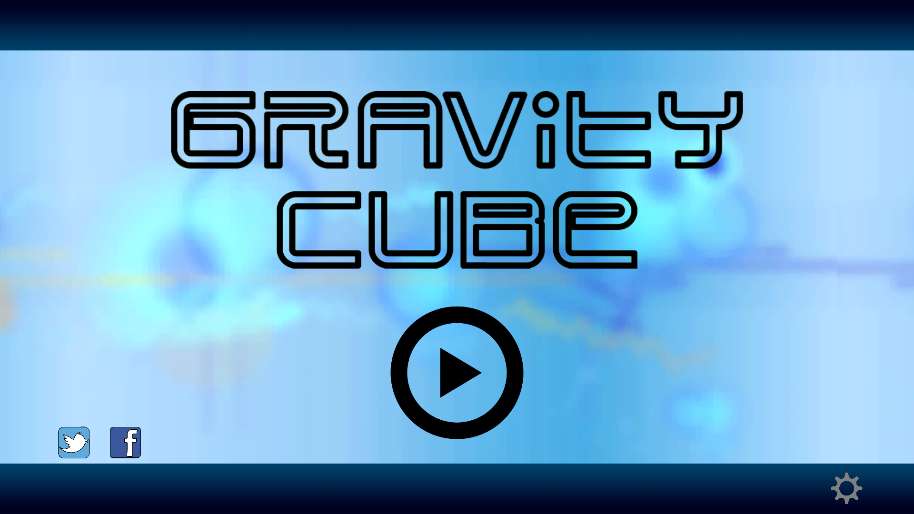
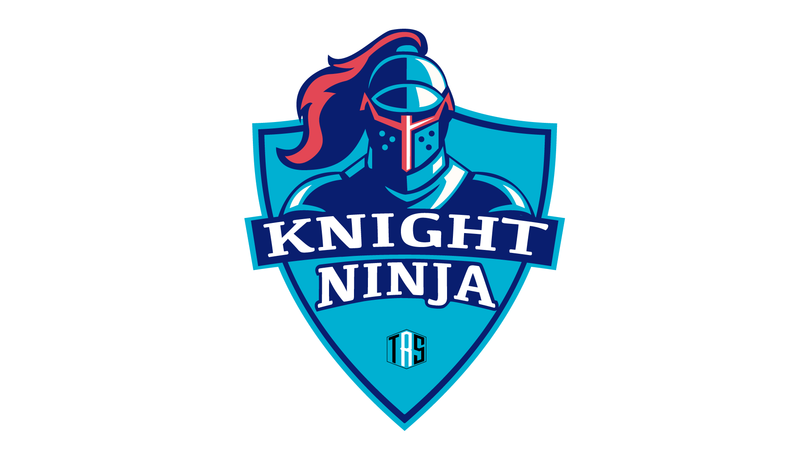
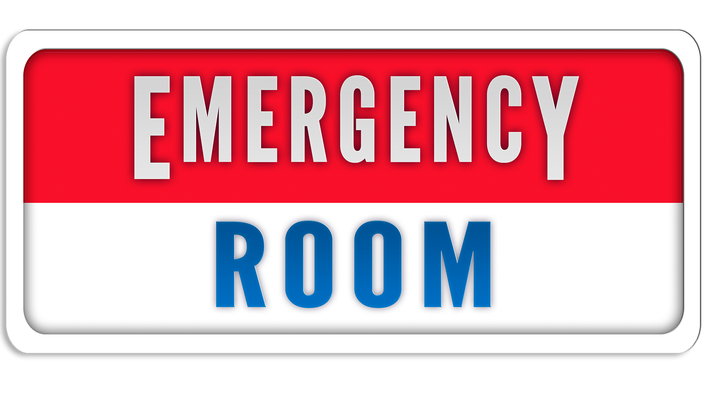

GRAVITY CUBE

In Gravity Cube you will have to demonstrate your skills by changing the gravity of a cube to avoid colliding with obstacles.
Try to beat your record or your friends in an infinite level that changes with each game.
Created by Nicolás Tapia Sanz: https://es.linkedin.com/in/nicolastapiasanz
Art by Sonia Cuadrado: http://www.soniaccuadrado.wix.com/portfolio
Music by Jazek: http://www.soundcloud.com/jazekofficial
JUST DREAM

Just Dream tells the story of a child who dreams of being an astronaut. With his imagination, everything is possible and begins to transform all his house into a rocket that travels to the moon where he is the commander of the ship. But in his interplanetary trip, the ship has problems and suddenly runs out of energy. To achieve your dream, you will have to help him to fix the ship through several puzzles that will become more and more complicated.
Just Dream is the first game of Nucelar Studios, a group of students from first year of Videogames Design And Development Degree of ESNE for the subject of Introduction To The Creative Process. Under the premises of a puzzle game which has the moon theme and was developed for mobile devices, they have created this game to try to tell their first story.
KNIGHT NINJA

Knight Ninja is a project for the subject of Videogame Technology made in Construct. It was my second game. It is a Drag And Drop 2D in wich you have to control a Knight in his way to finish the ninjas that have taken prisioner a damsel.
Knight Ninja is divided in 10 levels, each one more difficult than the previous one. Its launch took place on January 2016.
EMERGENCY ROOM

"EMERGENCY ROOM: Dr. Mortimer on call!" is a little game in which the player controls a doctor and a nurse in their daily work to save patients who arrive at their hospital. The goal of the player is simple: to cure all the patients he can in the time and prevent anyone from dying!
Emergency Room arises after throwing multiple ideas to the trash. Our college proposed us, as a delivery of a final project for a subject, to develop a project whose main topic was health. While our colleagues developed applications related to helping people, we opted to develop a game whose action was frenetic and happened in a hospital. We stated with an idea based on a game called Overcooked, a top view game with mechanics based on preparing the menus of a restaurant. From this, we begin the development of ER. After several months of development, we entered into the PlayStation First program. In it, we were able to test our game on a PlayStation 4 and learn how to use the Sony dev kits.